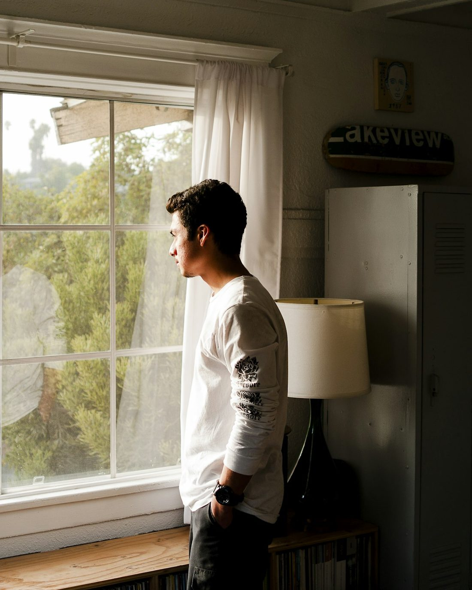

Current book
The Divine Reality
God, Islam & the Mirage of Atheism
An existential, spiritual and rational journey: the arguments for God, the Qur’an and the prophethood of Muhammad ﷺ, and why we must know, love and worship God.
Author · Educator · Founder · Practitioner
He writes and teaches about God, the Qur’an, and what it means to be human — bringing philosophy, theology and lived discipline to the questions that matter most. †

Current book
God, Islam & the Mirage of Atheism
An existential, spiritual and rational journey: the arguments for God, the Qur’an and the prophethood of Muhammad ﷺ, and why we must know, love and worship God.
On the prophethood of Muhammad ﷺ †
Thirty-three essays, revised †
Founder & director. Courses, seminars, and the wider team’s research into God, the Qur’an and contemporary doubt.
Visit →Mentorship and spiritual development for those moving from questioning to conviction. †
Visit →A community of thinkers and builders working on the ideas that shape the next generation. †
Visit →Practice & discipline
Brazilian Jiu-Jitsu is not a hobby set apart from the work; it is the same discipline worn on the body. Pressure, patience, and the honesty of a position that either holds or does not — the mat teaches what the page can only argue. †
More in About →Hamza Andreas Tzortzis is an author, public educator and researcher on Islam, God and the meaning of human life. He is the founder and director of Sapience Institute, and the author of The Divine Reality. His work moves between philosophy, theology and spirituality — and, off the page, the discipline of Brazilian Jiu-Jitsu. †
Read the full biographyFor lectures, debates, interviews and course enquiries.
Goes to his team. Used only to answer your enquiry. †